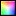

The top two toolbar buttons change appearance depending on the current
state of the image:

(alternative state is  )
enable toggling between colour model and greyscale display:
)
enable toggling between colour model and greyscale display:
- To switch from colour display to greyscale, select
.
- To switch from greyscale to colour display, select
.
NB
The above options can also be chosen by opening the
Controls menu and selecting the Models option.
This allows you to choose between Colour and
Greyscale options.
 (alternative state is
(alternative state is
 )
enable viewing single-channel views of the image, as a movie:
)
enable viewing single-channel views of the image, as a movie:
- To start the movie, select
.
This will display the image for a short period using each of the
currently selected channels in turn.
- The movie runs on a loop, and will continue until you stop it.
To stop the movie,
select .
The image then reverts to its appearance before the movie started.
 The Colour Picker button allows you to configure the
channel corresponding to a specific channel button.
To associate a specific channel with a channel button:
The Colour Picker button allows you to configure the
channel corresponding to a specific channel button.
To associate a specific channel with a channel button:
- Click on the Colour Picker button.
- In the menu that appears, choose which channel to adjust.
- The Colour Picker window opens (Figure 4.8.2.1.2-1).
- You can then select a colour in one of three ways, each available
by selecting one of the toolbar buttons at the top of the window.
These options are:
- Using the HSV colour wheel;
- Using RGB colour sliders (shown in Figure 4.8.2.1.2-1);
- Showing the colour list.
- Once happy with your settings, select Accept
to confirm the changes, or Revert to ignore
the setting changes you have just made.
- You should now see the channel change applied to the relevant channel button.
The Colour Picker can also be accessed by double-clicking on a channel button.
Right-clicking on a channel button gives access to a
menu from which you can choose to bring up the Colour Picker or to display
additional information about the channel
(Figure 4.8.2.1.2-2).